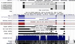
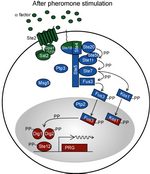
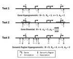

Accelerating Drug Development with Phenome-Wide Association StudiesViewing human genetics as "experiments of nature" allows us to predict the effecicacy and side effects of drugs in development. This can help pharmaceutical comapnies save time and money by prioritizing drug target leads. Here, we presented the first statistical evidence of the effectiveness of this approach, using 23andMe phenome-wide association studies (PheWAS) and historical data on drug approval. This work was presented at the 2014 Annual Meeting of the American Society of Human Genetics. See the poster here. |
|---|
Research
Research Summary
Integration of genomic and clinical data and knowledge in order to realize personalized medicine, harnessing the power and promises of next-generation sequencing.
Research Interest
Recent advancement and promises of genome technology have transformed medical research. Soon individual genome sequencing will be performed routinely, and the only challenge is how to make sense of the vast amount of genomic data. The only way to realized personalized medicine is through integration of different genomic information: variants in DNA sequence, copy number variation, epigenetic signatures, genetic interaction networks, and environmental effects. And this is my research goal.
I dream of a day when all clinical records, including patients' genetic information, are unified and stored on the cloud. With help of computational technology, physicians can harness the wealth of information and make best informed decision for patients. For this to happen, many things need to happen: electronic medical records, genome sequencing technology, and software that integrates all information together. My piece of the puzzle is the last one.
Publication list on PubMed
2014
2013
Bicluster-Based Error Rate Control for eQTL (BBER)With Prof. Christoph Lange, I developed an efficient approach that addresses the inappropriate independence assumption in standard eQTL multiple-testing adjustment approaches. By clustering highly correlated tests together BBER reduces the effective number of tests to adjust for dramatically. The work is being submitted to BMC Bioinformatics. |
|---|
2012
Integrative Genomics of COPD Sexual DimorphismWith Dr. Dawn DeMeo, I tackled the pernicious problem of gender disparity in Chronic Obstructive Pulmonary Disease (COPD) by classifying genes with sexually dimorphic differential expression. I found important pathways such as cell locomotion and angiogenesis are expressed in a sex-specific manner, and this is likely driven by hormone regulation and sex-specific methylation changes. The work is being submitted to PLoS Genetics. |
|---|
Representing eQTL as Bipartite NetworkeQTL results can be represented by a bipartite network where genes are one class of nodes and SNPs are the other. Clustering of the eQTL network from COPD patients reveals co-regulated modules of genes and genetic markers with coherent and relevant biological themes. |
|---|
2011
Microbial Co-occurrence Relationships in the Human MicrobiomeAs a part of the Human Microbiome Project (HMP), we provide the first comprehensive network of ecological relationships among microbes within and across different human body sites. This is a close collaboration between me (in Curtis Huttenhower Lab) and Karoline Faust (in Jeroen Raes Lab, Vrije Universiteit Brussel) with supports from Jacques Izard (Forsyth Institute) and Dirk Gevers (Broad Institute). The work is published in PLoS Computational Biology, along with the HMP consortium papers which appear in Nature (also this). |
|---|
2010
Detection of Copy Number Variation by Exome SequencingIn summer of 2010, I visited UCLA as an assistant researcher in Nelson Lab where I worked with a post-doctoral fellow Dr. Hane Lee in developing a method to detect copy number variants (CNVs) using exome sequencing data. The work was published in Bioinformatics along with an R package ExomeCNV. |
|---|
2009
|
 |
Ultraconserved cDNA SegmentsInspired by the discovery of highly conserved segments in mlncRNAs, I identified 96 stretches of cDNA longer than 200 bps with perfect conservation between human, mouse, and rat. The elements are termed Ultraconserved cDNA Segments (UCSs). I performed Real Time RT-PCR to confirm the existence of the transcripts. GO and InterPro enrichment test the UCSs suggested function in RNA regulation and alternative splicing. By enrichment test, the UCS genes tend to be target for miRNA regulation and are also associated with alternative splicing and nonsense mediated decay (AF-NMD). A surprising number of UCSs in the 5'-UTR and across start codons with multiple upstream ATG's implied that these UCSs may function in ATG selection. Most interestingly, I found that the UCSs exhibit resistance to formation of secondary structure as the free energy of the predicted secondary structures appeared significantly higher than that of randomly selected cDNA sequences of the same length. The work was published in Nucleic Acids Research. |
|---|
2008
|

|
PathwayED: Pathway Electrical DiagramsIn Fall 2008, I took CS272 Introduction to Biomedical Informatics Research Methodology, which is a project class in BMI. In the class, I partnered with Lillian To on a project on inferring regulatory pathways using PPI, TF-DNA, and knockout expression data. We were lucky to have Dr. Silpa Suthram, a postdoc in Atul Butte Lab, as our mentor. Below is the abstract: Biomedical researchers have long studied biological pathways in hopes of further understanding the effect of disease on critical events and interactions within these pathways. In recent years, new bioinformatic approaches to pathway prediction have been developed, taking advantage of the availability of vast amounts of microarray data and efficient machine learning techniques. Recent years have also led to the large-scale identification of protein-protein interaction (PPI) networks and transcription-factor-DNA (TF-DNA) interaction datasets. These large datasets each provide unique information on gene interactions, but when used alone can result in a high rate of false positive predictions. To address this problem, we present a novel approach to pathway prediction which integrates knockout microarray data with protein interaction networks by modeling the two data sets as an electrical circuit. The Electric Circuit Model achieved 99% specificity and up to 69% sensitivity in predicting the pheromone signaling pathway. click here for our final paper. |
|---|
mRNA-like Noncoding RNA (mlncRNA)In summer 2008, I interned at Sugano Lab at the University of Tokyo. I assisted a study of mlncRNAs. Given the expression profile of mlncRNAs in 21 tissues and cell lines, I used clustering to classify the mlncRNAs by tissue specificity. I also investigated conservation of the mlncRNA and found that although the overall conservation appeared low, long stretches of highly conserved sequences within the mlncRNAs exist. These two analyses helped identify candidates for further experimental studies. Noticing that the list of mlncRNAs was outdated, I rescreen a new list of mlncRANs from a cDNA library. I coauthored the abstract which is accepted to Biochemistry and Molecular Biology (BMB2008), a peer-review conference organized by the Molecular Biology Society of Japan and the Japanese Biochemical Society. click here for the abstract. |
|---|
2007
|
 |
Enrichment Test for Analysis of cis-Regulatory ElementsFrom spring to fall 2007, I worked with Prof. Bejerano on designing and developing a tool for statistical analysis of putative cis-regulatory elements. In particular, the tool performs three enrichment tests: binomial test, hypergeometric test, and foreground-background hypergeometric test. It offers choices of organism and annotation ontology. The tool was written in C with Kent source tree from UCSC. Prof. Bejerano and I worked closely together in platform choice, functional specification, architecture design, implementation, and testing. Since I left the lab, the program has been taken over by Cory McLean. Cory made it into a fully functional, web-based application now known as GREAT and published it in Nature Biotechnology. click here for more information about the lab. |
|---|
2006
Waterfall-Generated Ground Vibrations: A Second LookIn summer 2006, Prof. Antony Fraser-Smith, Austin Haugen, and I reexamined a long-held linear relationship between the reciprocal of height of waterfalls and the frequency of waterfall-generated ground vibrations. I designed experiment, collect data, and performed data analysis using fast Fourier transform and regression. The new data and analysis cast doubt on the validity of the linear relationship and suggested new model. The paper was published in the Stanford Electrical Engineering and Computer Science Research Journal in 2007. |
|---|
© Copyright 2009-2015 Fah Sathirapongsasuti. All rights reserved.